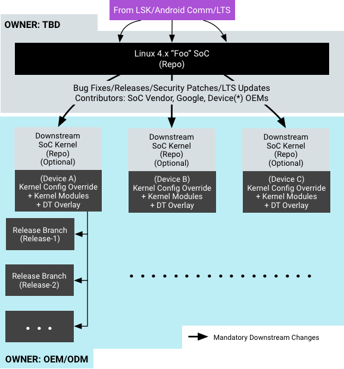

In Android 8.0, the device kernel split into System-on-Chip (SoC), device, and board-specific deliverables. This sets up the kernel and Android such that Original Device Manufacturers (ODMs) and Original Equipment Manufacturers (OEMs) can work in isolated board–specific trees for board–specific features, drivers, etc., enabling them to override common kernel configuration, add new drivers in the form of kernel modules, etc.
This page provides details on requirements for:
- Platform support for independent SoC and OEM/ODM kernel development. Android
9 recommends all board–specific code to be built and
shipped as kernel modules in devices. As a result:
- All platforms should support either Device Tree or Advanced Configuration and Power Interface (ACPI) to describe all non-discoverable devices.
- For device tree-based platforms, board–specific device nodes should be added to the kernel device tree as overlays.
- Application binary interface (ABI)/application programming interface (API) tests in Vendor Test Suite (VTS) to ensure a given kernel can run the Android Open Source Project (AOSP) framework.
- Minimum kernel version per Android release and support for generating Android Vendor Interface (VINTF) kernel objects.
Loadable kernel modules
All SoC kernels must support loadable kernel modules. As a starting point, the following kernel-config options (or their kernel-version equivalent) have been added to android-base.cfg in all common kernels and must be enabled in all device kernels:
CONFIG_MODULES=y CONFIG_MODULE_UNLOAD=y CONFIG_MODVERSIONS=y
Kernel modules should support unloading and reloading whenever possible.
Module signing
Optionally, ODMs can enable module signing in their own kernel configuration by enabling following kernel config options:
CONFIG_MODULE_SIG=y CONFIG_MODULE_SIG_FORCE=y
On devices required to support verified boot, Android requires the kernel modules to be in the partitions that have dm-verity enabled. Module signing is not mandatory and will not be tested against; however, if desired, an ODM can enable module signing as long as they have the key signing and other infrastructure required to ensure independent kernel and filesystem OTA updates in the future.
File locations
While Android 7.x and earlier versions do not mandate against kernel modules
(and include support for insmod and rmmod), Android
8.x and higher recommends the use of kernel modules in the ecosystem. The
following table shows potential board–specific peripheral support required
across three Android boot modes:
| Boot Mode | Storage | Display | Keypad | Battery | PMIC | Touchscreen | NFC, Wi-Fi, Bluetooth |
Sensors | Camera |
|---|---|---|---|---|---|---|---|---|---|
| Recovery | |||||||||
| Charger | |||||||||
| Android |
In addition to availability in Android boot modes, kernel modules may also be categorized by who owns them (the SoC vendor or the ODM). If kernel modules are being used, requirements for their placement in filesystem are as follows:
- All kernels should have built-in support for booting and mounting partitions.
- Kernel modules must be loaded from a read-only partition.
- For devices required to have verified boot, kernel modules should be loaded from verified partitions.
- Kernel modules should not be located in
/system. - Kernel modules from the SoC vendor that are required for full Android or
Charger modes should be located in
/vendor/lib/modules. - If an ODM partition exists, kernel modules from the ODM that are required
for full Android or Charger modes should be located in
/odm/lib/modules. Otherwise, these modules should be located in/vendor/lib/modules. - Kernel modules from both the SoC vendor and ODM that are required for
Recovery mode should be located in the recovery
ramfsat/lib/modules. - If a kernel module is required for both Recovery mode and full Android or
Charger modes, it should exist both in the recovery
rootfsand either the/vendoror/odmpartitions (as described above). - Kernel modules used in Recovery mode should not depend on modules located
only in
/vendoror/odm, as those partitions are not mounted in Recovery mode. - SoC vendor kernel modules should not depend on ODM kernel modules.
In Android 7.x and earlier, /vendor and /odm
partitions are not mounted early. In Android 8.x and higher, to
make module loading from these partitions possible, provisions have been made to
mount partitions early for both
non-A/B and A/B devices. This also
ensures the partitions are mounted in both Android and
Charger modes.
Android build system support
In BoardConfig.mk, the Android build defines a
BOARD_VENDOR_KERNEL_MODULES variable that provides a full list of
the kernel modules intended for the vendor image. The modules listed in this
variable are copied into the vendor image at /lib/modules/, and,
after being mounted in Android, appear in /vendor/lib/modules (in
accordance with the above requirements). Example configuration of the vendor
kernel modules:
vendor_lkm_dir := device/$(vendor)/lkm-4.x BOARD_VENDOR_KERNEL_MODULES := \ $(vendor_lkm_dir)/vendor_module_a.ko \ $(vendor_lkm_dir)/vendor_module_b.ko \ $(vendor_lkm_dir)/vendor_module_c.ko
… where a vendor kernel module pre-built repository is mapped into the Android build at the location listed above.
The recovery image is likely to contain a subset of the vendor modules. The
Android build defines the variable BOARD_RECOVERY_KERNEL_MODULES
for these modules. Example:
vendor_lkm_dir := device/$(vendor)/lkm-4.x BOARD_RECOVERY_KERNEL_MODULES := \ $(vendor_lkm_dir)/vendor_module_a.ko \ $(vendor_lkm_dir)/vendor_module_b.ko
The Android build takes care of running depmod to generate the
required modules.dep files in /vendor/lib/modules and
/lib/modules (recovery ramfs).
Module loading & versioning
We recommend loading all kernel modules in one pass from
init.rc* by invoking modprobe -a. This avoids the
overhead of repeatedly initializing the C runtime environment for the
modprobe binary. The early-init event can be modified
to invoke modprobe:
on early-init
exec u:r:modprobe:s0 -- /vendor/bin/modprobe -a -d \
/vendor/lib/modules module_a module_b module_c ...
Typically, a kernel module must be compiled with the kernel that the module
is to be used with (otherwise the kernel will refuse to load the module).
CONFIG_MODVERSIONS provides a workaround by detecting breakages in
the ABI. This feature calculates a Cyclic Redundancy Check (CRC) value for the
prototype of each exported symbol in the kernel and stores the values as part of
the kernel; for symbols used by a kernel module, the values are also stored in
the kernel module. When the module is loaded, the values for the symbols used by
the module are compared with the ones in the kernel. If the values match, the
module is loaded; otherwise the load fails.
To enable the updating of the kernel image separately from the vendor image,
enable CONFIG_MODVERSIONS. Doing so allows small updates to the
kernel (such as bug fixes from LTS) to be made while maintaining compatibility
with existing kernel modules in the vendor image. However,
CONFIG_MODVERSIONS does not itself fix an ABI breakage. If the
prototype of an exported symbol in the kernel changes, either due to
modification of the source or because the kernel configuration changed, this
breaks compatibility with kernel modules that use that symbol. In such cases,
the kernel module must be recompiled.
For example, the task_struct structure in the kernel (defined in
include/linux/sched.h) contains many fields conditionally included
depending on the kernel configuration. The sched_info field is
present only if CONFIG_SCHED_INFO is enabled (which occurs when
CONFIG_SCHEDSTATS or CONFIG_TASK_DELAY_ACCT are
enabled). If these configuration options change state, the layout of the
task_struct structure changes and any exported interfaces from the
kernel that use task_struct are altered (e.g.
set_cpus_allowed_ptr in kernel/sched/core.c).
Compatibility with previously-compiled kernel modules that use these interfaces
breaks, requiring those modules to be rebuilt with the new kernel
configuration.
For more details on CONFIG_MODVERSIONS, refer to the
documentation in the kernel tree at
Documentation/kbuild/modules.txt.
Mounting partitions early (first stage mount)
REQUIREDAll Treble-enabled devices must enable first stage mount to make sure
init can load SELinux policy fragments that are spread across
system and vendor partitions (this also enables
loading of kernel modules as soon as possible after kernel boot).
Android must have access to the filesystem(s) on which the modules reside. To
enable, Android 8.x and higher supports mounting /system,
/vendor, or /odm as early as init's first
stage (i.e before selinux is initialized). Device makers can use
device tree overlays to
specify fstab entries for early mounted partitions.
Early mounting partitions, VBoot 1.0
Requirements to early mount partitions with vboot 1.0 include:
- Device node paths must use their by-name symlinks in
fstaband device tree entries. For example, instead of specifying partitions using/dev/block/mmcblk0pX, ensure partitions are named and the device node is/dev/block/…./by-name/{system,vendor,odm}. - Paths given for
PRODUCT_{SYSTEM,VENDOR}_VERITY_PARTITIONandCUSTOM_IMAGE_VERITY_BLOCK_DEVICEin the device configuration for the product (i.e. indevice/oem/project/device.mk) must match the corresponding block device nodes specified by-name in thefstab/device tree entries. Example:PRODUCT_SYSTEM_VERITY_PARTITION := /dev/block/…./by-name/system PRODUCT_VENDOR_VERITY_PARTITION := /dev/block/…./by-name/vendor CUSTOM_IMAGE_VERITY_BLOCK_DEVICE := /dev/block/…./by-name/odm
- Entries provided via device tree overlays must not repeat in the
fstabfile fragments. For example, when specifying an entry to mount/vendorin the device tree, thefstabfile must not repeat that entry. - Partitions requiring
verifyatbootmust not be early mounted (doing so is unsupported). - The verity mode/state for verified partitions must be specified in kernel
cmdline using
androidboot.veritymodeoption (existing requirement).
Early mounting device tree, VBoot 1.0
In Android 8.x and higher, init parses the device tree and
creates fstab entries to mount the partition early during its first
stage. An fstab entry takes the form:
src mnt_point type mnt_flags fs_mgr_flags
Device tree properties are defined to mimic that format:
fstabentries must be under/firmware/android/fstabin the device tree and must have compatible string set toandroid,fstab.- Each node under
/firmware/android/fstabis treated as a single early mountfstabentry. A node must have the following properties defined:dev. Must point to the device node representing the partition by-name.type. Must be the filesystem type (as in thefstabfiles).mnt_flags. Must be the comma-separated list of mount flags (as infstabfiles).fsmgr_flags. Must be the list of Androidfs_mgr flags(as infstabfiles).- A/B partitions must have
slotselect fs_mgroption. - dm-verity enabled partitions must have
verify fs_mgroption.
- A/B partitions must have
Example: /system and /vendor on N6P
The following example shows device tree early mount for system
and vendor partitions on Nexus 6P:
/ {
firmware {
android {
compatible = "android,firmware";
fstab {
compatible = "android,fstab";
system {
compatible = "android,system";
dev = "/dev/block/platform/soc.0/f9824900.sdhci/by-name/system";
type = "ext4";
mnt_flags = "ro,barrier=1,inode_readahead_blks=8";
fsmgr_flags = "wait,verify";
};
vendor {
compatible = "android,vendor";
dev = "/dev/block/platform/soc.0/f9824900.sdhci/by-name/vendor";
type = "ext4";
mnt_flags = "ro,barrier=1,inode_readahead_blks=8";
fsmgr_flags = "wait";
};
};
};
};
};
Example: /vendor on Pixel
The following example shows device tree early mount for
/vendor on Pixel (remember to add slotselect for
partitions subject to A/B):
/ {
firmware {
android {
compatible = "android,firmware";
fstab {
compatible = "android,fstab";
vendor {
compatible = "android,vendor";
dev = "/dev/block/platform/soc/624000.ufshc/by-name/vendor";
type = "ext4";
mnt_flags = "ro,barrier=1,discard";
fsmgr_flags = "wait,slotselect,verify";
};
};
};
};
};
Early mounting partitions, VBoot 2.0
VBoot 2.0 is Android Verified Boot (AVB). The requirements to early mount partitions with VBoot 2.0 are:
- The device node paths must use their by-name symlinks in
fstaband device tree entries. For example, instead of specifying partitions using/dev/block/mmcblk0pX, ensure the partitions are named and the device node is/dev/block/…./by-name/{system,vendor,odm}. - Build system variables (such as
PRODUCT_{SYSTEM,VENDOR}_VERITY_PARTITIONandCUSTOM_IMAGE_VERITY_BLOCK_DEVICE) used for VBoot 1.0 are NOT required for VBoot 2.0. Instead, new build variables introduced in VBoot 2.0 (includingBOARD_AVB_ENABLE := true) should be defined; for a full configuration, refer to Build-System-Integration for AVB. - Entries provided via device tree overlays must not repeat in the
fstabfile fragments. For example, if you specify an entry to mount/vendorin the device tree, thefstabfile must not repeat that entry. - VBoot 2.0 does not support
verifyatboot, regardless of whether early mount is enabled or not. - The verity mode/state for verified partitions must be specified in kernel
cmdline using
androidboot.veritymodeoption (existing requirement). Make sure to include the following fixes for AVB:
Early mounting device tree, VBoot 2.0
The configuration in device tree for VBoot 2.0 is the same as that in VBoot 1.0, with the following exceptions:
- The
fsmgr_flagis switched fromverifytoavb. - All partitions with AVB metadata must be in the vbmeta entry in device tree,
even when the partition isn't mounting early (e.g.,
/boot).
Example: /system and /vendor on N5X
The following example shows device tree early mount for system
and vendor partitions on Nexus 5X. Note that:
/systemis mounted with AVB and/vendoris mounted without integrity verification.- As the Nexus 5X has no
/vbmetapartition, so the top-level vbmeta resides at the end of/bootpartition (for details, refer to the AOSP changelist)./ { firmware { android { compatible = "android,firmware"; vbmeta { compatible = "android,vbmeta"; parts = "boot,system,vendor"; }; fstab { compatible = "android,fstab"; system { compatible = "android,system"; dev = "/dev/block/platform/soc.0/f9824900.sdhci/by-name/system"; type = "ext4"; mnt_flags = "ro,barrier=1,inode_readahead_blks=8"; fsmgr_flags = "wait,avb"; }; vendor { compatible = "android,vendor"; dev = "/dev/block/platform/soc.0/f9824900.sdhci/by-name/vendor"; type = "ext4"; mnt_flags = "ro,barrier=1,inode_readahead_blks=8"; fsmgr_flags = "wait"; }; }; }; }; };
Example: /vendor on Pixel
The following example shows mounting /vendor early on a Pixel.
Note that:
- More partitions are specified in the vbmeta entry because those partitions are protected by AVB.
- All AVB partitions must be included, even if only
/vendoris early mounted. - Remember to add
slotselectfor partitions subject to A/B./ { vbmeta { compatible = "android,vbmeta"; parts = "vbmeta,boot,system,vendor,dtbo"; }; firmware { android { compatible = "android,firmware"; fstab { compatible = "android,fstab"; vendor { compatible = "android,vendor"; dev = "/dev/block/platform/soc/624000.ufshc/by-name/vendor"; type = "ext4"; mnt_flags = "ro,barrier=1,discard"; fsmgr_flags = "wait,slotselect,avb"; }; }; }; }; };
Device tree overlay support (Bootloader)
Device Tree Overlay (DTO) was
designed to extend the existing
flattened
device-tree (FDT) implementation so that the initial device-tree data in
kernel can be modified by userspace at runtime by loading additional overlay
FDTs that amend the original data. Android does not require runtime updates of
DT blobs from user space, but instead recommends that vendors add the device
tree patching in the bootloader with the help of
libfdt/libufdt.
Support for DTOs in Android varies by Android release:
- Android 7.x and earlier did not require device tree support and did not provide recommendations regarding how vendors pass DT blobs to the kernel or where they store them.
- Android 8.x recommended such support to keep the board–specific and SoC-only parts of the kernel separate.
- Android 9 requires a DTBO partition to be present and at least one DTO to be applied.
Partitioning requirements
Most Android devices today append the DT blob to the kernel at build time, which the bootloader knows how to read from. As Android has no specific requirements for how to build/store DT blobs (which is considered as part of the SoC kernel), the DT blob can be appended to the kernel or stored in a separate partition. The only assumption is that the bootloader already knows how and where to load the DT blob from.
Requirements for Device Tree Overlay support (if used):
- Device should have new device tree blob for overlay (DTBO) partition per kernel image for board–specific DT overlay (for details on the partition format, see DTB/DTBO Partitions. The assumption is that bootloader already knows where and how to load the SoC–specific DTB.
- Overlay DT partition should be A/B-ed for A/B devices. For these devices, the recovery kernel is the same as Android kernel, but the partition must be A/B-ed as it can be updated via OTA.
- Partition size is board–specific.
- The DT overlay partition size depends on the device and the amount of changes needed on top of the main SoC kernel DT blob.
- The size of the DTBO partition is a function of number of changes needed to make the SoC kernel. Choose a size with room to grow for future updates (typically, 8MB partition size is more than enough).
Bootloader requirements
Requirements for bootloader include the following:
- Bootloader should know how and where (considering the boot slot for A/B devices) to load the SoC–specific DT blob from in a vendor-specific way. This is typically extracted from the end of the kernel image as blobs are appended to the kernel.
- Bootloader should know how and where (considering the boot slot for A/B devices) to load the overlay DT blob from in a vendor-specific way.
- Bootloader must patch the main DT blob with the overlay before passing the combined device tree to the kernel.
For more details about adding support for DTO in bootloader, see Device Tree Overlays.
Core kernel requirements
As of Android 8.0, Android mandates a minimum kernel version and kernel
configuration and checks them both in VTS as well as during an OTA. Android
device kernels must enable the kernel .config support along with
the option to read the kernel configuration at runtime through
procfs.
Kernel .config support
All device kernels must enable the entirety of android-base.cfg, which must include the following kernel–config options (or their kernel–version equivalent):
CONFIG_IKCONFIG=y CONFIG_IKCONFIG_PROC=y
Kernel version
For Android 9, the minimum LTS kernel version requirements are 4.4.107, 4.9.84, and 4.14.42.
- All SoCs productized in 2018 must launch with kernel 4.9.84 or newer.
- All other SoCs launching new Android devices running Android 8.x must use kernel 3.18 or newer. All other SoCs launching new Android devices running Android 9 must use kernel 4.4.107 or newer.
- Device kernels based on 4.14 must include the 4.14.42 or later LTS release.
- Regardless of launch date, all SoCs with device launches on Android 8.x and higher remain subject to the kernel changes required to enable Treble.
- Older Android devices that will be upgraded to Android 8.x or 9 can continue to use their original base kernel version if desired.
For details on LTS kernels, refer to Long-term stable kernels and Android Common Kernels
Device tree support
Device tree support in the kernel must be enabled and bootloaders must pass
the hardware description in the form of device tree to the kernel (unless the
platform supports ACPI). The device tree must also be available for Android to
read and be able to pass vendor/odm specific parameters to Android.
CONFIG_OF (along with all other device/subsystem specific
CONFIG_OF_* kernel config options) are mandatory.
CONFIG_PROC_DEVICETREE is required on kernels prior to 3.15 so
Android can access vendor/odm specific configuration very early during boot. On
kernels 3.15 and later, the functionality of this option is merged into
CONFIG_OF.
CONFIG_OF=y CONFIG_PROC_DEVICETREE=y (kernels prior to 3.15)
For an example of using device tree to early mount
vendor/odm partitions, refer to the
AOSP
changelist.
DebugFS
The implementation of the vendor interface should not rely on
debugfs. It may be enabled, but VTS testing may be done with
debugfs unmounted.
Future Android versions
The current Android release recommends that all board–specific code is built and shipped as kernel modules in devices. The rest of the kernel is treated monolithically with respect to Android (whether or not is it is actually a monolithic kernel, or parts of it are compiled as kernel modules).
This monolithic kernel is an SoC kernel that can boot on the SoC vendor's reference hardware but nothing beyond that. Today, SoC kernels are treated similar to the common kernel; they are also heavily replicated in board–specific repos. This distribution model causes them to be fixed differently for the same bug in each branch, delaying future updates to the kernel due to cherry–picking at different times or fixing the same bug differently. To counter this, the SoC kernels must be a separate deliverable, with everyone who uses the SoC contributing to the same SoC kernel.
Figure 1 (below) illustrates a common example of how SoC kernels get fragmented over time, across Android releases, and across ODMs.

Figure 1 shows the following:
- It takes a significant amount of effort and time for everyone to cross-merge across board–specific branches/tags.
- While waiting for the cross-merge, Android device manufacturers patch their own kernel for bugs/security fixes.
- Divergence from the ancestor make future upgrades/merges really difficult.
The proposed model for a common SoC kernel addresses problems created by upmerging changes (SoC-specific bug fixes, LTS upgrades, security fixes, etc.). Figure 2 (below) illustrates how the workflow will change in an ideal, unified–per–SoC–kernel scenario:
This is intended to solve the problem of fragmented kernel repos by recommending and working with device manufacturers to stay up to date with the common SoC kernel. Android 8.x and higher provides all possible options to ODMs to help them avoid maintaining their own SoC kernels and instead rely on the common SoC kernel for LTS upgrades/bug fixes/security patches/etc.
As a start, we want to facilitate all ODMs/vendors using a single kernel source for an SoC. In the future, we want to move towards a single binary distribution of kernel per-SoC.
Upstreaming
To make updating to newer kernel versions much easier and almost automatic, and to provide a more secure and reliable platform for ODMs to build a product with, it is strongly recommended that SoC vendors work to upstream their kernel changes and get them accepted into the main kernel.org repository. While doing so requires additional, up front efforts in time and engineering resources, it is well documented to save both time and money in the long run. It has also been documented that merged code is of a much higher quality with fewer bugs and security issues (and usually smaller) than code that has not been reviewed by the community.
If full support for the SoC is merged upstream, the community can make needed
API changes as the internal kernel API evolves over time, automatically
extending the longevity of the platform. The kernel can also be automatically
tested for any regressions in development and stable releases by adding the
hardware platform to one of the many community-managed kernel test platforms
(such as
kernelci.org).
For help working with the Linux kernel community to upstream your code, refer to the following resources:
Documentation/process(Documentation/development-processin 4.9 and earlier)Documentation/CodingStyleDocumentation/SubmittingPatches
The community uses a minimal review process to accept stand-alone drivers and filesystems into the staging portion of the kernel, where the community works to improve code quality.